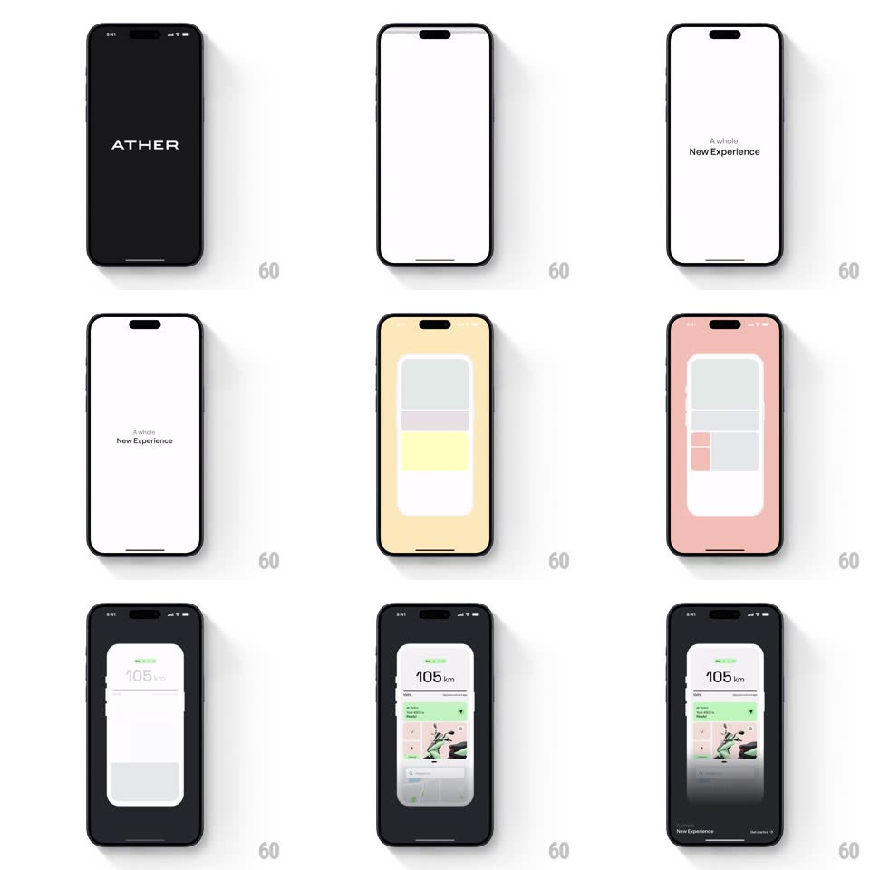

Media
Frame-by-frame

Rebuild this animation 1:1: Ather's splash - a glitching wordmark resolves on black, then a wireframe phone assembles block by block into the live dashboard.

Rebuild this animation 1:1: Ather's splash - a glitching wordmark resolves on black, then a wireframe phone assembles block by block into the live dashboard. ## Integration Integration: stack-agnostic spec - springs given as stiffness/damping, timed motions as duration + curve; map every value to your framework and animation library of choice. ## Scene Black screen with the ATHER wordmark, distorted with digital glitch. The screen flashes white with "A whole New Experience", then a wireframe phone outline builds itself - gray placeholder blocks, a green status block, a red alert block - before the real dashboard fades into the frame (105 km range, scooter visual, map card). ## Motion spec Pattern: glitch resolve + wireframe-to-product build. - Glitch (0-900ms): the wordmark stutters with horizontal slice offsets and RGB-split (+-5px channel separation), 3-4 glitch bursts of ~120ms, then locks clean white. - White flash (900ms-1.1s): screen wipes to white; "A whole New Experience" sets in two lines with a tracking settle (+0.08em to 0, 300ms). - Wireframe build (1.1-2.4s): the phone outline draws (stroke, 300ms), then content blocks slide into place - gray cards from alternating sides (250ms each, 60ms stagger), the green block dropping from top, the red block popping with a small scale bounce (spring ~450/24). Background tints shift (white to peach to dark) between build stages. - Reveal (2.4-3s): the wireframe crossfades into the real dashboard pixel-for-pixel - blocks become the range display, scooter image, and map card (400ms), and the phone frame dissolves to full-bleed. ## Calibration - The wireframe blocks must land exactly where the real UI elements appear - the crossfade is a 1:1 replacement, not a scene change. - Glitch bursts decrease in intensity as the wordmark resolves. ## Reduced motion Wordmark fades in; wireframe fades to dashboard. ## Don't miss - The colored blocks (green, red) are the only hue in the wireframe phase - everything else is grayscale. - "ATHER" letterforms are wide-tracked and geometric; the glitch must not deform them beyond readability.